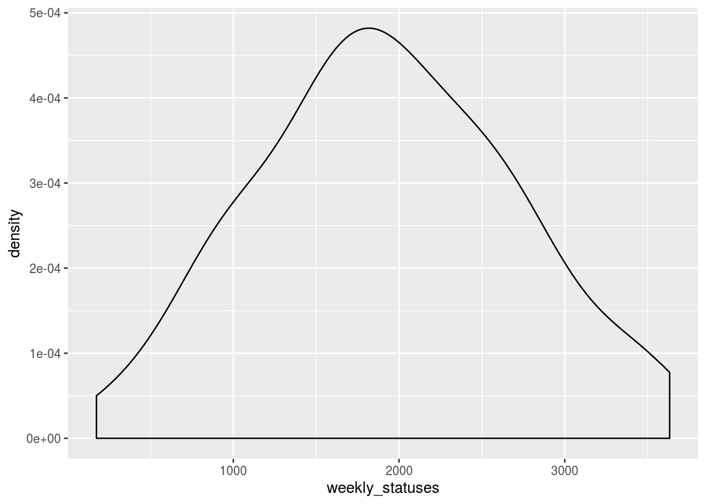

A great qualitative analysis of language used by Finnish members of the parliament (MPs) on Twitter was made couple days ago (in Finnish).
Poliitikkojen somekäytös on puhuttanut. Siksi ajattelin tehdä pienen vertailun kansanedustajien kielenkäytöstä.
— Tuomo Kondie (Kondien Fed'a) (@TuomoKondie) July 27, 2020
Yritin ensin katsoa viime viikkoa mutta se törkyn määrä oli liikaa.
Kokeillaan siis lyhyempää väliä. Mitä kansanedustajat tviittaavat yhden ainoan sunnuntain aikana?
Here is my take on analysis of tweets and retweets of Finnish MPs. Goals for this project:
- Automate hourly collection of tweet data produced by MPs.
- Describe how Finnish MPs tweet based on their background variables. At least by party, age, gender and mp experience years.
- Sentiment analysis of the language used in the tweets.
- Update constantly open source raw data and publish weekly a report on language used.
Of course all this done when üë∂ allows me to code.
Current Finnish MPs
First I scrape the listing of current MPs and their backgrounds from Wikipedia https://fi.wikipedia.org/wiki/Luettelo_vaalikauden_2019%E2%80%932023_kansanedustajista. Package rvest is used here.
library(rvest)
library(tidyverse)
library(janitor)
url <- "https://fi.wikipedia.org/wiki/Luettelo_vaalikauden_2019%E2%80%932023_kansanedustajista"
wikipedia <- read_html(url)
seniority <- function(period) {
start <- period %>%
str_extract("\\d{4}(?=–)")
end <- period %>%
str_extract("(?<=–)\\d{4}")
if(is.na(end)) return(1)
start:end %>%
length()
}
wikipedia <- wikipedia %>%
html_nodes("table") %>%
.[[2]] %>%
html_table() %>%
clean_names %>%
filter(puolue == "") %>%
mutate(party = str_remove(puolue_2, "\\[.*\\]")) %>%
select(-puolue_2,
-puolue,
xp_in_years = kansanedustajana) %>%
mutate(xp_in_years = str_split(xp_in_years, ", ")) %>%
unnest(xp_in_years) %>%
rowwise() %>%
mutate(xp_in_years = seniority(xp_in_years)) %>%
group_by(nimi) %>%
mutate(xp_in_years = sum(xp_in_years)) %>%
ungroup() %>%
distinct %>%
mutate(join_nimi = nimi %>%
str_to_lower %>%
str_remove(" |\\t|\\s") %>%
stringi::stri_trans_general("Latin-ASCII")) %>%
rename(electoral_district = vaalipiiri,
mp_name = nimi)Current Tweeting Finnish MPs
I was thankfully notified that Finnish Parliament maintains a list of the MPs who are on Twitter.
Luultavasti ajantasainen lista.https://t.co/LwkTy0VRpE
— Ismo Peltonen üåçüåèüåéüá∫üá≥üá™üá∫üá´üáÆ (@ipeltonen) July 27, 2020
Lets start collecting all accounts from that list with rtweet package.
library(rtweet)
twiittaavat_kansanedustajat <- lists_members("203337069") %>%
select(matches("_id|name|_count$|at$"))Some MP Twitter account names have nicknames, emojis, Arabic and typos and therefore combining of the Twitter and Wikipedia needs a small manual mapping for some MP names.
twiittaavat_kansanedustajat <- twiittaavat_kansanedustajat %>%
mutate(name = case_when(
str_detect(name, "Harkimo") ~ "Harry Harkimo",
str_detect(name, "Ari Torniainen") ~ "Ari Torniainen",
str_detect(name, "Taee") ~ "Hussein al-Taee",
str_detect(name, "Eeva-Johanna Elorant") ~ "Eeva-Johanna Eloranta",
str_detect(name, "Niina Malm") ~ "Niina Malm",
str_detect(name, "Johanna Ojala") ~ "Johanna Ojala-Niemelä",
str_detect(name, "Petelius") ~ "Pirkka-Pekka Petelius",
str_detect(name, "Mäkisalo-R") ~ "Merja Mäkisalo-Ropponen",
TRUE ~ name),
join_nimi = name %>%
str_to_lower %>%
str_remove(" |\\t|\\s") %>%
stringi::stri_trans_general("Latin-ASCII")) %>%
rename(twitter_name = name) %>%
left_join(wikipedia) %>%
select(-join_nimi)And voila. Here we have tweeting MPs, their twitter metadata, party affiliation, MP experience in years and electoral district.
## Observations: 178
## Variables: 13
## $ user_id <chr> "1165587258050830337", "1136164451470757889",…
## $ twitter_name <chr> "Kari Tolvanen", "Thomas Blomqvist", "Erkki T…
## $ screen_name <chr> "KariTolvanen3", "ThomasBlomqvis7", "Tuomioja…
## $ followers_count <int> 139, 2164, 483, 2187, 1211, 200, 170, 383, 46…
## $ friends_count <int> 69, 327, 0, 138, 662, 1, 7, 234, 152, 72, 255…
## $ listed_count <int> 2, 27, 7, 17, 19, 10, 12, 17, 3, 17, 16, 15, …
## $ created_at <dttm> 2019-08-25 11:30:58, 2019-06-05 06:54:48, 20…
## $ favourites_count <int> 0, 393, 9, 457, 5332, 2, 0, 186, 7, 0, 558, 5…
## $ statuses_count <int> 3, 214, 76, 179, 1939, 4, 0, 95, 6, 26, 136, …
## $ mp_name <chr> "Kari Tolvanen", "Thomas Blomqvist", "Erkki T…
## $ electoral_district <chr> "Uusimaa", "Uusimaa", "Helsinki", "Kaakkois-S…
## $ xp_in_years <dbl> 1, 1, 11, 1, 1, 1, 1, 1, 1, 1, 1, 1, 1, 1, 1,…
## $ party <chr> "Kokoomus", "RKP", "Sosiaalidemokraatit", "Si…Collect Status dataset
Median MP has ~1800 statuses. Status is a tweet or a retweet. Twitter API allows collecting last 3200 status messages. That is an amount that 60 percent of MPs have during their whole history.
twiittaavat_kansanedustajat %>%
ggplot() + aes(statuses_count) + geom_density() + geom_vline(xintercept = median(twiittaavat_kansanedustajat$statuses_count))
Collecting maximum of 3200 statuses per MP sums to total of 310 000 tweets.
## Observations: 310,016
## Variables: 90
## $ user_id <chr> "1165587258050830337", "1165587258050830…
## $ status_id <chr> "1166623189843218437", "1166311314668568…
## $ created_at <dttm> 2019-08-28 08:06:57, 2019-08-27 11:27:4…
## $ screen_name <chr> "KariTolvanen3", "KariTolvanen3", "KariT…
## $ text <chr> "@MarinSanna Eduskunta on hyväksynyt kev…
## $ source <chr> "Twitter Web App", "Twitter Web Client",…
## $ display_text_width <dbl> 174, 228, 218, 251, 225, 140, 23, 139, 2…
## $ reply_to_status_id <chr> "1166605912943071238", NA, "116555749892…
## $ reply_to_user_id <chr> "1086378912", NA, "798095178", NA, NA, N…
## $ reply_to_screen_name <chr> "MarinSanna", NA, "MariaOhisalo", NA, NA…
## $ is_quote <lgl> FALSE, FALSE, FALSE, TRUE, TRUE, FALSE, …
## $ is_retweet <lgl> FALSE, FALSE, FALSE, FALSE, FALSE, TRUE,…
## $ favorite_count <int> 47, 3, 59, 181, 32, 0, 16, 0, 5, 0, 15, …
## $ retweet_count <int> 3, 0, 7, 34, 12, 20, 4, 2, 0, 522, 1, 1,…
## $ quote_count <int> NA, NA, NA, NA, NA, NA, NA, NA, NA, NA, …
## $ reply_count <int> NA, NA, NA, NA, NA, NA, NA, NA, NA, NA, …
## $ hashtags <list> [<"kevytautot", "turvallisuus">, NA, <"…
## $ symbols <list> [NA, NA, NA, NA, NA, NA, NA, NA, NA, NA…
## $ urls_url <list> [NA, "mtvgo.fi/Ilhjbs0", NA, "twitter.c…
## $ urls_t.co <list> [NA, "https://t.co/fenZElFucp", NA, "ht…
## $ urls_expanded_url <list> [NA, "https://mtvgo.fi/Ilhjbs0", NA, "h…
## $ media_url <list> [NA, NA, NA, NA, NA, NA, NA, NA, NA, NA…
## $ media_t.co <list> [NA, NA, NA, NA, NA, NA, NA, NA, NA, NA…
## $ media_expanded_url <list> [NA, NA, NA, NA, NA, NA, NA, NA, NA, NA…
## $ media_type <list> [NA, NA, NA, NA, NA, NA, NA, NA, NA, NA…
## $ ext_media_url <list> [NA, NA, NA, NA, NA, NA, NA, NA, NA, NA…
## $ ext_media_t.co <list> [NA, NA, NA, NA, NA, NA, NA, NA, NA, NA…
## $ ext_media_expanded_url <list> [NA, NA, NA, NA, NA, NA, NA, NA, NA, NA…
## $ ext_media_type <chr> NA, NA, NA, NA, NA, NA, NA, NA, NA, NA, …
## $ mentions_user_id <list> ["1086378912", "1948704752", "798095178…
## $ mentions_screen_name <list> ["MarinSanna", "MTVSuomi", "MariaOhisal…
## $ lang <chr> "fi", "fi", "fi", "fi", "sv", "sv", "und…
## $ quoted_status_id <chr> NA, NA, NA, "1287657695126925314", "1287…
## $ quoted_text <chr> NA, NA, NA, "Poland should not withdraw …
## $ quoted_created_at <dttm> NA, NA, NA, 2020-07-27 07:54:52, 2020-0…
## $ quoted_source <chr> NA, NA, NA, "Twitter for iPhone", "Twitt…
## $ quoted_favorite_count <int> NA, NA, NA, 44, 44, NA, NA, NA, NA, NA, …
## $ quoted_retweet_count <int> NA, NA, NA, 12, 12, NA, NA, NA, NA, NA, …
## $ quoted_user_id <chr> NA, NA, NA, "1001024222787981312", "1001…
## $ quoted_screen_name <chr> NA, NA, NA, "FinlandCoE", "FinlandCoE", …
## $ quoted_name <chr> NA, NA, NA, "Finland in the Council of E…
## $ quoted_followers_count <int> NA, NA, NA, 1161, 1161, NA, NA, NA, NA, …
## $ quoted_friends_count <int> NA, NA, NA, 498, 498, NA, NA, NA, NA, NA…
## $ quoted_statuses_count <int> NA, NA, NA, 1041, 1041, NA, NA, NA, NA, …
## $ quoted_location <chr> NA, NA, NA, "Strasbourg, France", "Stras…
## $ quoted_description <chr> NA, NA, NA, "Permanent Representation of…
## $ quoted_verified <lgl> NA, NA, NA, TRUE, TRUE, NA, NA, NA, NA, …
## $ retweet_status_id <chr> NA, NA, NA, NA, NA, "1288009581378048000…
## $ retweet_text <chr> NA, NA, NA, NA, NA, "GÓÐA ÓLAVSØKU, FØRO…
## $ retweet_created_at <dttm> NA, NA, NA, NA, NA, 2020-07-28 07:13:08…
## $ retweet_source <chr> NA, NA, NA, NA, NA, "Falcon Social Media…
## $ retweet_favorite_count <int> NA, NA, NA, NA, NA, 45, NA, 4, NA, 1061,…
## $ retweet_retweet_count <int> NA, NA, NA, NA, NA, 20, NA, 2, NA, 522, …
## $ retweet_user_id <chr> NA, NA, NA, NA, NA, "68352264", NA, "201…
## $ retweet_screen_name <chr> NA, NA, NA, NA, NA, "nordensk", NA, "Fin…
## $ retweet_name <chr> NA, NA, NA, NA, NA, "Nordisk Samarbejde"…
## $ retweet_followers_count <int> NA, NA, NA, NA, NA, 7389, NA, 11945, NA,…
## $ retweet_friends_count <int> NA, NA, NA, NA, NA, 2584, NA, 3851, NA, …
## $ retweet_statuses_count <int> NA, NA, NA, NA, NA, 13916, NA, 13805, NA…
## $ retweet_location <chr> NA, NA, NA, NA, NA, "Norden", NA, "Washi…
## $ retweet_description <chr> NA, NA, NA, NA, NA, "Nordisk Råd og Nord…
## $ retweet_verified <lgl> NA, NA, NA, NA, NA, FALSE, NA, TRUE, NA,…
## $ place_url <chr> NA, NA, NA, NA, NA, NA, NA, NA, NA, NA, …
## $ place_name <chr> NA, NA, NA, NA, NA, NA, NA, NA, NA, NA, …
## $ place_full_name <chr> NA, NA, NA, NA, NA, NA, NA, NA, NA, NA, …
## $ place_type <chr> NA, NA, NA, NA, NA, NA, NA, NA, NA, NA, …
## $ country <chr> NA, NA, NA, NA, NA, NA, NA, NA, NA, NA, …
## $ country_code <chr> NA, NA, NA, NA, NA, NA, NA, NA, NA, NA, …
## $ geo_coords <list> [<NA, NA>, <NA, NA>, <NA, NA>, <NA, NA>…
## $ coords_coords <list> [<NA, NA>, <NA, NA>, <NA, NA>, <NA, NA>…
## $ bbox_coords <list> [<NA, NA, NA, NA, NA, NA, NA, NA>, <NA,…
## $ status_url <chr> "https://twitter.com/KariTolvanen3/statu…
## $ name <chr> "Kari Tolvanen", "Kari Tolvanen", "Kari …
## $ location <chr> "", "", "", "Raseborg, Finland", "Rasebo…
## $ description <chr> "Kansanedustaja, kaupunginvaltuutettu ja…
## $ url <chr> NA, NA, NA, "https://t.co/WzDb2OA8aI", "…
## $ protected <lgl> FALSE, FALSE, FALSE, FALSE, FALSE, FALSE…
## $ followers_count <int> 139, 139, 139, 2162, 2162, 2162, 2162, 2…
## $ friends_count <int> 69, 69, 69, 327, 327, 327, 327, 327, 327…
## $ listed_count <int> 2, 2, 2, 27, 27, 27, 27, 27, 27, 27, 27,…
## $ statuses_count <int> 3, 3, 3, 214, 214, 214, 214, 214, 214, 2…
## $ favourites_count <int> 0, 0, 0, 393, 393, 393, 393, 393, 393, 3…
## $ account_created_at <dttm> 2019-08-25 11:30:58, 2019-08-25 11:30:5…
## $ verified <lgl> FALSE, FALSE, FALSE, TRUE, TRUE, TRUE, T…
## $ profile_url <chr> NA, NA, NA, "https://t.co/WzDb2OA8aI", "…
## $ profile_expanded_url <chr> NA, NA, NA, "https://www.thomasblomqvist…
## $ account_lang <lgl> NA, NA, NA, NA, NA, NA, NA, NA, NA, NA, …
## $ profile_banner_url <chr> NA, NA, NA, "https://pbs.twimg.com/profi…
## $ profile_background_url <chr> NA, NA, NA, NA, NA, NA, NA, NA, NA, NA, …
## $ profile_image_url <chr> "http://pbs.twimg.com/profile_images/116…MPs produce weekly thousands of statuses. Sometimes over 3000 statuses.
statuses %>%
mutate(year = lubridate::year(created_at),
week = lubridate::week(created_at)) %>%
filter(year > 2018) %>%
count(year, week, name = "weekly_statuses") %>%
ggplot + aes(weekly_statuses) + geom_density()
Next up
Next time I will classify statuses by their sentiments.